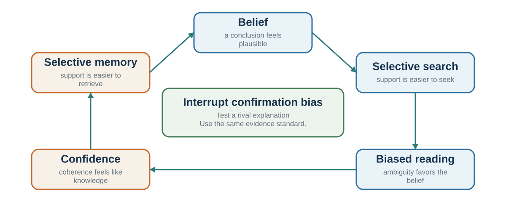

10 Beliefs That Defend Themselves
How search, interpretation, memory, and confidence protect an existing account
Learning goals
- Trace how an existing belief shapes search, interpretation, memory, and confidence.
- Distinguish confirmation, self-serving attribution, correspondence bias, and three forms of overconfidence.
- Build a structured disconfirmation protocol with a prediction recorded before discussion.
The language of bias can easily become accusatory. We say, “You are biased,” and the conversation becomes defensive. But in decision science, bias should function more like diagnosis than accusation.
Imagine a doctor who says, “This looks like pneumonia.” The doctor is not insulting the patient. The label organizes evidence. It points toward causes, tests, risks, and treatments. Similarly, saying “this looks like confirmation bias” should mean: we may be searching for supporting evidence and neglecting disconfirming evidence. Saying “this looks like anchoring” should mean: the first number may be pulling later judgments. Saying “this looks like escalation of commitment” should mean: prior investment may be making it harder to stop.
The point is not to shame the decision-maker. The point is to improve the decision.
A bias label is useful only if it changes the process. Naming confirmation bias should lead to disconfirming tests. Naming overconfidence should lead to calibration, outside views, and uncertainty ranges. Naming anchoring should lead to independent estimates before discussion. Naming halo effects should lead to structured evaluation criteria. Naming sunk costs should lead to a fresh decision based on future costs and benefits.
Biases often arise from mechanisms that are useful in many contexts. Confirmation helps build coherent models. Confidence supports action. First impressions help rapid social judgment. Anchors provide starting points when uncertainty is high. Commitment supports persistence. These mechanisms are not inherently bad. They become biases when they are applied too strongly, too automatically, or in the wrong environment.
This is why a bias is not simply “bad thinking.” It is often good thinking used in the wrong place.
Biases also persist because they are supported by stories. A person does not usually experience themselves as confirming, anchoring, or rationalizing. They experience themselves as being realistic, fair, decisive, loyal, prudent, strategic, or experienced. The mind supplies a story that makes the judgment feel reasonable.
“I am not ignoring evidence; I am focusing on what matters.” “I am not overconfident; I have experience.” “I am not anchored; that number was a useful starting point.” “I am not favoring my team; I know their true quality.” “I am not escalating commitment; I am showing perseverance.” “I am not biased; I am more objective than most people.”
These stories matter because they protect the bias from correction. The Narrator After Choice examines rationalization once an outcome is known. Here the same logic begins earlier: the preferred story can accompany judgment while it is still being formed.
The practical goal of this chapter is not to memorize a list of biases. It is to develop diagnostic habits. When a judgment feels obvious, ask what might be bending it.
Confirmation and myside bias

Confirmation bias is the tendency to seek, interpret, and remember information in ways that support existing beliefs or hypotheses (Nickerson, 1998). It is one of the most important biases because it affects nearly every domain of judgment.
People prefer coherence. Once a belief begins to form, the mind naturally looks for information that fits. Evidence that supports the belief feels relevant. Evidence that challenges it feels flawed, exceptional, or less important. The result is not always conscious distortion. Often it is selective attention, selective search, selective interpretation, and selective memory.
A classic demonstration comes from Wason’s rule-discovery task. Participants saw a sequence such as 2-4-6 and were asked to discover the rule by proposing other sequences. Many people tested sequences that confirmed their initial hypothesis, such as “increasing by two,” rather than trying sequences that might falsify it (Wason, 1960). The actual rule was broader. The task illustrates a general habit: people often test whether they are right rather than whether they might be wrong.
In another classic line of work, Lord, Ross, and Lepper (1979) gave people who supported or opposed capital punishment mixed evidence about whether the death penalty deters crime. Rather than moving toward each other, participants interpreted the evidence in ways that strengthened their original positions. Supporters saw the pro-deterrence study as stronger; opponents saw the anti-deterrence study as stronger. The same evidence increased polarization.
This pattern is sometimes called biased assimilation: people assimilate evidence into their prior beliefs. It is also related to myside bias, the tendency to evaluate evidence and arguments in ways that favor one’s own position (Stanovich et al., 2013). Myside bias can appear even among intelligent and educated people because intelligence can help people generate better arguments for what they already believe.
Confirmation bias begins early in the decision loop. It shapes what information is selected, how it is interpreted, and what feedback is remembered. A manager who believes an employee lacks initiative notices missed opportunities but overlooks quiet contributions. A doctor who has a favored diagnosis attends to confirming symptoms. A negotiator who believes the other side is hostile interprets ambiguity as bad faith. An investor who believes in a company searches for good news and dismisses warnings.
Confirmation bias is especially strong when beliefs are tied to identity, status, morality, or prior commitment. Kunda (1990) described motivated reasoning as reasoning directed toward preferred conclusions. Kahan (2013) showed that people’s reasoning about evidence can become entangled with ideology and identity. When accepting evidence would threaten group belonging or self-image, people may become more—not less—skilled at defending their prior view.
Confirmation bias also explains why vague personality descriptions can feel accurate. The Barnum effect or Forer effect occurs when people accept general descriptions as uniquely true of themselves. Forer (1949) gave students a personality description supposedly based on a test, but actually composed of vague statements that could apply to many people. Students rated the description as highly accurate. People search their memories for confirming examples and ignore mismatches. A horoscope, personality reading, or vague leadership profile can feel personal because the mind supplies the evidence.
This does not mean all belief persistence is irrational. Some beliefs are worth preserving because they are supported by strong evidence. A scientist should not abandon a theory after one weak anomaly. A doctor should not discard a likely diagnosis because of one ambiguous symptom. The problem is not maintaining beliefs. The problem is protecting them from fair tests.
Good decision-making requires active disconfirmation. Ask:
What evidence would prove me wrong? Have I searched for that evidence? What would someone who disagrees notice? Am I interpreting weak evidence as strong because I like the conclusion? Am I demanding more proof from opposing evidence than from supporting evidence? What belief would I hold if I did not care which answer was true?
Confirmation bias is hard to see because coherence feels like truth. But a story that fits together is not necessarily a story that fits reality.
Self-serving explanations
Self-serving bias is the tendency to interpret events in ways that protect or enhance the self. People often attribute success to their own ability, effort, or character, while attributing failure to bad luck, unfair conditions, other people, or external constraints (Miller & Ross, 1975; Mezulis et al., 2004). This is the pre-emptive partner of the narrator discussed earlier: one process protects the belief during judgment, while the other can reconstruct the cause after choice. The same safeguard serves both—record the forecast, mechanism, and revision condition before the outcome is known.
After a team wins, fans may say, “We were better.” After the team loses, they may blame the referee, weather, injuries, or luck. A manager whose project succeeds may credit vision and leadership. If the project fails, the manager may emphasize market conditions, poor execution by others, or unexpected constraints. A student who does well on an exam may credit intelligence and preparation. If they do poorly, they may blame the exam, instructor, room, or timing.
Self-serving bias is not always entirely false. External factors do matter. Referees make mistakes. Markets shift. Exams vary in fairness. But the asymmetry is the issue. People often explain good and bad outcomes differently depending on whether the outcome protects self-image.
The bias is partly motivational. People want to see themselves as competent, moral, and in control. It is also informational. People have more access to their own intentions and constraints than to others’. When we fail, we know the obstacles we faced. When others fail, we see mainly the behavior.
Attribution: behavior is visible, situations are not
Attribution is the causal explanation attached to an action. A colleague misses a deadline. Was the cause carelessness, an impossible workload, ambiguous instructions, a dependency that failed, or a reasonable choice to protect a more important task? The observed behavior is the same. The implied remedy is not.
The fundamental attribution error, also called the correspondence tendency, is the tendency to infer a stable personal disposition from another person’s behavior while giving too little weight to situational constraints (Ross, 1977). The name can mislead if it is treated as a claim that character never matters. Dispositions sometimes predict behavior. The error is concluding too quickly that behavior corresponds to character when the situation could have produced the same action.
One reason is an actor-information asymmetry. Actors can usually retrieve their intentions, pressures, instructions, incentives, and blocked options. Observers see the action more directly than the conditions that shaped it. This asymmetry does not force one universal actor–observer pattern: people can blame themselves, excuse others, or reverse the usual tendency when motives and identities change. It does explain why a character story can feel complete before the situational evidence has been collected.
Self-serving attribution adds a directional motive to that informational problem. We may treat our own success as evidence of ability and our own failure as evidence of circumstance, then use the opposite weighting for someone else. Across studies, that self-protective tendency is common but varies across people, outcomes, development, and cultures (Miller & Ross, 1975; Mezulis et al., 2004). It should therefore be tested in the case at hand, not presumed from the label.
Use an attribution audit before converting an action into a judgment of character:
- Describe the behavior without a trait word: “The report arrived two days late,” not “She is unreliable.”
- List at least two situational explanations and one dispositional explanation that could produce it.
- Apply the same evidentiary standard to yourself, the other person, and your preferred group.
- Identify the observation that would distinguish among those explanations—for example, performance across different workloads or instructions.
- Match the intervention to the supported cause: clarify the task, change the constraint, build a safeguard, or address a repeated behavioral pattern.
The audit does not excuse harmful behavior. It prevents a premature character verdict from hiding a repairable system or a testable alternative explanation.
Self-serving bias makes learning difficult. If failure is always caused by external factors, the decision-maker has little reason to change. If success is always caused by personal brilliance, the decision-maker becomes overconfident. Teams and organizations can become trapped in flattering explanations.
Negotiation provides a powerful example. Babcock and Loewenstein (1997) reviewed research showing that disputants often interpret fairness in self-serving ways. When people know which side they represent, they tend to view fair settlements as more favorable to their own side. This can make bargaining harder, because each side sincerely believes its position is fair. In one study of settlement negotiations, participants who learned their role before reviewing case materials developed more self-serving assessments and settled less often than those who evaluated the case before knowing their role (Babcock et al., 1995).
The danger is that self-serving judgments feel like fairness. Each side says, “We are being reasonable.” The conflict persists because “reasonable” has been filtered through self-interest.
A related bias is the bias blind spot: people tend to see biases more readily in others than in themselves (Pronin et al., 2002). We judge our own objectivity by introspection: “I do not feel biased.” We judge others by their behavior: “Their conclusion serves their interest.” Because biases often operate outside awareness, introspection is a poor detector. Scopelliti and colleagues (2015) found that people who were more prone to bias blind spot were not necessarily better at avoiding other biases; believing oneself objective can reduce correction.
Self-serving bias is not always harmful. Some positive illusions may support motivation and resilience (Taylor & Brown, 1988). People who maintain hope after setbacks may persist. But self-protection becomes costly when it blocks accurate feedback.
A useful corrective is to ask:
If someone else made this decision and got this outcome, how would I explain it? What did I contribute to this failure? What did luck contribute to this success? What would the other side say is fair? Am I using different standards for myself and others? What feedback am I avoiding because it threatens self-image?
Self-serving bias protects identity. Good judgment requires protecting learning too.
Three forms of overconfidence
Overconfidence is not one bias but several related biases. Moore and Healy (2008) distinguish three forms: overestimation, overplacement, and overprecision.
Overestimation means believing one’s performance or ability is better than it is. Overplacement means believing one is better than others. Overprecision means being too certain that one’s beliefs are accurate.
All three are common.
People often overestimate how quickly they can finish tasks. They may believe they are above-average drivers, leaders, investors, teachers, or negotiators. They may give narrow confidence intervals around uncertain estimates. They may feel certain about forecasts that are actually fragile.
Svenson (1981) famously found that a large majority of drivers rated themselves as safer and more skillful than the median driver. This is statistically impossible if everyone is comparing themselves to the same population. Better-than-average effects are widespread, especially for desirable traits that are ambiguous and easy to define in self-serving ways (Alicke & Govorun, 2005).
Kruger and Dunning (1999) reported larger self-assessment errors among lower performers in tasks involving logic, grammar, and humor. The proposed explanation was partly metacognitive: some skills used to perform well may also help a person recognize good performance. But the familiar quartile plot does not identify that mechanism. Measurement error, regression to the mean, scale boundaries, task difficulty, and general self-enhancement can reproduce much of the pattern, and later work suggests that any distinctive metacognitive effect may be smaller and more task-specific than the popular story implies (Gignac & Zajenkowski, 2020). Measure performance and confidence calibration separately; do not infer from one cross-sectional ranking that the least skilled are uniquely unaware.
Overprecision is especially important in forecasting. People often give confidence intervals that are too narrow. They underestimate uncertainty. A project manager may say there is a 90% chance the project will finish in six months, when similar projects rarely do. An investor may feel certain a stock is undervalued. A policy analyst may produce a precise forecast from uncertain assumptions. Precision creates comfort, but it can be false comfort.
Overconfidence has benefits. It can encourage action, entrepreneurship, leadership, and persistence. A world with no confidence would produce paralysis. Some degree of confidence may be motivationally useful.
But overconfidence is costly when it leads people to ignore evidence, underprepare, take excessive risks, underestimate competitors, or fail to build safeguards.
The planning fallacy is one of the most practical forms of overconfidence. People tend to underestimate how long tasks will take, even when they know similar tasks have taken longer in the past (Buehler et al., 1994; Kahneman & Tversky, 1979). They focus on the plan as imagined rather than the distribution of outcomes in similar cases. This is sometimes called taking the “inside view.” The inside view looks at the specific project, its steps, intentions, and hoped-for path. The “outside view” asks what happened in a reference class of similar projects (Kahneman & Lovallo, 1993; Lovallo & Kahneman, 2003).
A student thinks, “This paper should take two days.” A contractor thinks, “This renovation should take three months.” A software team thinks, “This feature should be ready next sprint.” A government thinks, “This infrastructure project should be completed within budget.” Each may be focusing on the ideal path and underweighting delays, coordination problems, revisions, illness, uncertainty, and competing priorities.
Run the following case directly: a city team proposes an 18-month light-rail schedule while comparable projects usually finish late and over budget. Before hearing why “this project is different,” write the reference-class completion range; then list only the genuinely diagnostic differences that justify moving away from it. The exercise turns a familiar planning story into an outside-view test.
Overconfidence is also common in entrepreneurship and mergers. Entrepreneurs may overestimate the probability of success. Executives may overestimate their ability to integrate acquisitions. Lovallo and Kahneman (2003) described “delusions of success” in which decision-makers exaggerate benefits and underestimate costs.
A useful corrective is calibration. Ask people to make probability estimates and then compare outcomes with predictions over time. Forecasting research suggests that people can improve when they make explicit probabilistic forecasts and receive feedback (Tetlock & Gardner, 2015). Another corrective is using ranges rather than point estimates. Instead of asking, “How long will this take?” ask, “What is the 10th percentile, median, and 90th percentile completion time?” This makes uncertainty visible.
Other useful questions include:
What is the base rate for similar cases? How often have I been right in this domain before? What would make my estimate wrong? What does an outside view suggest? Am I confusing confidence with evidence? Have I built a margin of safety?
Overconfidence feels like knowledge. Good decision-making asks whether the feeling has been earned.
| Bias | Story from the inside | Process correction |
|---|---|---|
| Confirmation / myside | “The evidence keeps supporting us.” | Specify disconfirming evidence and assign an opposing test. |
| Self-serving judgment | “Our success was skill; failure was circumstance.” | Apply the same attribution rule to self and others. |
| Overestimation | “We can do more than the record suggests.” | Compare prediction with past calibrated performance. |
| Overplacement | “We are better than the competitors.” | Use a real comparison distribution, not an imagined average. |
| Overprecision | “The range is narrow because the story is clear.” | Use intervals, scenarios, and sensitivity analysis. |
Practice Lab
Choose one consequential belief held by you or a team. Produce a disconfirmation protocol with five entries: the current claim and confidence; the observation that would materially reduce confidence; the strongest competing account; a person assigned to develop that account without reputational penalty; and a dated prediction recorded before group discussion. Specify how each possible result changes action rather than merely the story.
Take it forward
- Use this when: supporting evidence accumulates easily while the belief becomes harder to test.
- Do not infer: that persistence proves bias, that confidence measures competence, or that naming a bias corrects it.
- Try this next: state what would change your mind, give the rival account an owner, and record the prediction before the outcome can be explained away.
References cited in this chapter
Alicke, M. D., & Govorun, O. (2005). The better-than-average effect. In M. D. Alicke, D. A. Dunning, & J. I. Krueger (Eds.), The self in social judgment (pp. 85–106). Psychology Press.
Babcock, L., & Loewenstein, G. (1997). Explaining bargaining impasse: The role of self-serving biases. Journal of Economic Perspectives, 11(1), 109–126.
Babcock, L., Loewenstein, G., Issacharoff, S., & Camerer, C. (1995). Biased judgments of fairness in bargaining. American Economic Review, 85(5), 1337–1343.
Buehler, R., Griffin, D., & Ross, M. (1994). Exploring the planning fallacy: Why people underestimate their task completion times. Journal of Personality and Social Psychology, 67(3), 366–381.
Forer, B. R. (1949). The fallacy of personal validation: A classroom demonstration of gullibility. Journal of Abnormal and Social Psychology, 44(1), 118–123.
Gignac, G. E., & Zajenkowski, M. (2020). The Dunning–Kruger effect is (mostly) a statistical artefact: Valid approaches to testing the hypothesis with individual differences data. Intelligence, 80, Article 101449. https://doi.org/10.1016/j.intell.2020.101449
Kahan, D. M. (2013). Ideology, motivated reasoning, and cognitive reflection. Judgment and Decision Making, 8(4), 407-424.
Kahneman, D., & Lovallo, D. (1993). Timid choices and bold forecasts: A cognitive perspective on risk taking. Management Science, 39(1), 17–31.
Kahneman, D., & Tversky, A. (1979). Intuitive prediction: Biases and corrective procedures. TIMS Studies in Management Science, 12, 313–327.
Kruger, J., & Dunning, D. (1999). Unskilled and unaware of it: How difficulties in recognizing one’s own incompetence lead to inflated self-assessments. Journal of Personality and Social Psychology, 77(6), 1121–1134.
Kunda, Z. (1990). The case for motivated reasoning. Psychological Bulletin, 108(3), 480-498.
Lord, C. G., Ross, L., & Lepper, M. R. (1979). Biased assimilation and attitude polarization. Journal of Personality and Social Psychology, 37(11), 2098–2109.
Lovallo, D., & Kahneman, D. (2003). Delusions of success: How optimism undermines executives’ decisions. Harvard Business Review, 81(7), 56–63.
Mezulis, A. H., Abramson, L. Y., Hyde, J. S., & Hankin, B. L. (2004). Is there a universal positivity bias in attributions? A meta-analytic review of individual, developmental, and cultural differences in the self-serving attributional bias. Psychological Bulletin, 130(5), 711–747.
Miller, D. T., & Ross, M. (1975). Self-serving biases in attribution of causality: Fact or fiction? Psychological Bulletin, 82(2), 213–225.
Moore, D. A., & Healy, P. J. (2008). The trouble with overconfidence. Psychological Review, 115(2), 502–517.
Nickerson, R. S. (1998). Confirmation bias: A ubiquitous phenomenon in many guises. Review of General Psychology, 2(2), 175–220.
Pronin, E., Lin, D. Y., & Ross, L. (2002). The bias blind spot: Perceptions of bias in self versus others. Personality and Social Psychology Bulletin, 28(3), 369–381.
Ross, L. (1977). The intuitive psychologist and his shortcomings: Distortions in the attribution process. In L. Berkowitz (Ed.), Advances in experimental social psychology (Vol. 10, pp. 173–220). Academic Press.
Scopelliti, I., Morewedge, C. K., McCormick, E., Min, H. L., Lebrecht, S., & Kassam, K. S. (2015). Bias blind spot: Structure, measurement, and consequences. Management Science, 61(10), 2468–2486.
Stanovich, K. E., West, R. F., & Toplak, M. E. (2013). Myside bias, rational thinking, and intelligence. Current Directions in Psychological Science, 22(4), 259–264.
Svenson, O. (1981). Are we all less risky and more skillful than our fellow drivers? Acta Psychologica, 47(2), 143–148.
Taylor, S. E., & Brown, J. D. (1988). Illusion and well-being: A social psychological perspective on mental health. Psychological Bulletin, 103(2), 193-210.
Tetlock, P. E., & Gardner, D. (2015). Superforecasting: The art and science of prediction. Crown.
Wason, P. C. (1960). On the failure to eliminate hypotheses in a conceptual task. Quarterly Journal of Experimental Psychology, 12(3), 129–140.